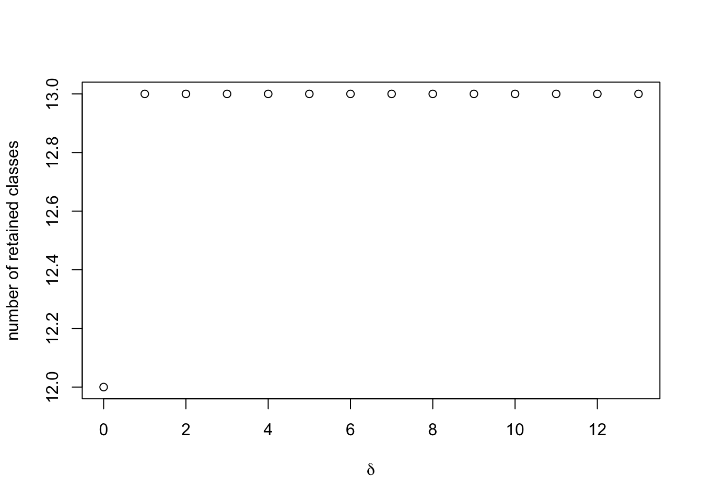

Last updated: 2020-10-15
Checks: 6 1
Knit directory: lieb/
This reproducible R Markdown analysis was created with workflowr (version 1.6.2). The Checks tab describes the reproducibility checks that were applied when the results were created. The Past versions tab lists the development history.
Great! Since the R Markdown file has been committed to the Git repository, you know the exact version of the code that produced these results.
Great job! The global environment was empty. Objects defined in the global environment can affect the analysis in your R Markdown file in unknown ways. For reproduciblity it's best to always run the code in an empty environment.
The command set.seed(20190717) was run prior to running the code in the R Markdown file. Setting a seed ensures that any results that rely on randomness, e.g. subsampling or permutations, are reproducible.
Nice! There were no cached chunks for this analysis, so you can be confident that you successfully produced the results during this run.
Great job! Using relative paths to the files within your workflowr project makes it easier to run your code on other machines.
Great! You are using Git for version control. Tracking code development and connecting the code version to the results is critical for reproducibility.
The results in this page were generated with repository version 545f48d. See the Past versions tab to see a history of the changes made to the R Markdown and HTML files.
Note that you need to be careful to ensure that all relevant files for the analysis have been committed to Git prior to generating the results (you can use wflow_publish or wflow_git_commit). workflowr only checks the R Markdown file, but you know if there are other scripts or data files that it depends on. Below is the status of the Git repository when the results were generated:
Ignored files:
Ignored: .DS_Store
Ignored: .Rhistory
Ignored: .Rproj.user/
Ignored: analysis/.DS_Store
Ignored: analysis/.Rhistory
Ignored: analysis/pairwise_fitting_cache/
Ignored: analysis/preprocessing_cache/
Ignored: data/.DS_Store
Ignored: data/.Rhistory
Ignored: output/.DS_Store
Note that any generated files, e.g. HTML, png, CSS, etc., are not included in this status report because it is ok for generated content to have uncommitted changes.
These are the previous versions of the repository in which changes were made to the R Markdown (analysis/priors.Rmd) and HTML (docs/priors.html) files. If you've configured a remote Git repository (see ?wflow_git_remote), click on the hyperlinks in the table below to view the files as they were in that past version.
| File | Version | Author | Date | Message |
|---|---|---|---|---|
| Rmd | 545f48d | hillarykoch | 2020-07-12 | fix typo in choosing delta section |
| html | 545f48d | hillarykoch | 2020-07-12 | fix typo in choosing delta section |
| html | cc98d2b | hillarykoch | 2020-04-24 | replace cache and update to describe flex_mu |
| html | 828e725 | hillarykoch | 2020-04-23 | add a preprocessing section |
| html | c5fd6fc | hillarykoch | 2020-04-23 | change nav bar to accomodate a menu |
| Rmd | 41e870e | hillarykoch | 2020-03-29 | fix bug in getting prior weights |
| html | 41e870e | hillarykoch | 2020-03-29 | fix bug in getting prior weights |
| html | 5d5c3dd | hillarykoch | 2020-03-07 | Build site. |
| html | 7c42345 | hillarykoch | 2020-02-20 | Build site. |
| html | 2a5b7c0 | hillarykoch | 2020-02-20 | Build site. |
| html | 3a9bf9d | hillarykoch | 2020-02-20 | Build site. |
| html | 72e6fec | hillarykoch | 2020-02-20 | Build site. |
| Rmd | 862bc02 | hillarykoch | 2020-02-07 | big updates for mcmc processors |
| html | 862bc02 | hillarykoch | 2020-02-07 | big updates for mcmc processors |
| html | 8b3e556 | hillarykoch | 2019-12-03 | Build site. |
| html | 39383ac | hillarykoch | 2019-12-03 | Build site. |
| Rmd | 645d408 | hillarykoch | 2019-12-03 | workflowr::wflow_publish(files = "*") |
| html | e467a51 | hillarykoch | 2019-08-16 | different shiny location |
| html | d58e1a6 | hillarykoch | 2019-08-16 | resource data |
| html | 38fb1c0 | hillarykoch | 2019-08-16 | edit shiny |
| html | 56e3d81 | hillarykoch | 2019-07-18 | add hamming |
| Rmd | c87184f | hillarykoch | 2019-07-18 | add hamming |
| html | c87184f | hillarykoch | 2019-07-18 | add hamming |
| html | d712ef9 | hillarykoch | 2019-07-18 | add hamming |
| html | 3a118c5 | hillarykoch | 2019-07-18 | add hamming |
| Rmd | e15a4f0 | hillarykoch | 2019-07-18 | add hamming |
| html | e15a4f0 | hillarykoch | 2019-07-18 | add hamming |
| Rmd | 4991356 | hillarykoch | 2019-07-18 | updat mcmc section |
| html | 4991356 | hillarykoch | 2019-07-18 | updat mcmc section |
| html | a20df35 | hillarykoch | 2019-07-17 | fix link |
| Rmd | 963d888 | hillarykoch | 2019-07-17 | fix link |
| Rmd | 228123d | hillarykoch | 2019-07-17 | update up to obtaining the hyperparameters |
| html | 228123d | hillarykoch | 2019-07-17 | update up to obtaining the hyperparameters |
| html | c1dc0c1 | hillarykoch | 2019-07-17 | update up to obtaining the hyperparameters |
| Rmd | 7f8434c | hillarykoch | 2019-07-17 | update up to obtaining the hyperparameters |
| html | 7f8434c | hillarykoch | 2019-07-17 | update up to obtaining the hyperparameters |
| html | 674120c | hillarykoch | 2019-07-17 | update about page |
| Rmd | e67a3a2 | hillarykoch | 2019-07-17 | update about page |
| html | e67a3a2 | hillarykoch | 2019-07-17 | update about page |
| Rmd | 2faf446 | hillarykoch | 2019-07-17 | update about page |
| html | 2faf446 | hillarykoch | 2019-07-17 | update about page |
| Rmd | 8278253 | hillarykoch | 2019-07-17 | update about page |
| html | 8278253 | hillarykoch | 2019-07-17 | update about page |
| html | 2177dfa | hillarykoch | 2019-07-17 | update about page |
| Rmd | 8b30694 | hillarykoch | 2019-07-17 | update about page |
| html | 8b30694 | hillarykoch | 2019-07-17 | update about page |
| html | e36b267 | hillarykoch | 2019-07-17 | update about page |
| html | a991668 | hillarykoch | 2019-07-17 | update about page |
| html | a36d893 | hillarykoch | 2019-07-17 | update about page |
| html | e8e54b7 | hillarykoch | 2019-07-17 | update about page |
| html | f47c013 | hillarykoch | 2019-07-17 | update about page |
| Rmd | 50cf23e | hillarykoch | 2019-07-17 | make skeleton |
| html | 50cf23e | hillarykoch | 2019-07-17 | make skeleton |
We are now just about ready to set up our MCMC. First, we need to determine the hyperparameters in the priors of our Gaussian mixture. These are all calculated in an empirical Bayesian manner -- that is, we can recycle information from the pairwise fits to inform our priors in the full-information mixture. This task can be split into 2 sub-tasks:
computing the prior hyperparameters for the cluster mixing weights
computing every other hyperparameter
The former is the most essential, as it helps us remove more candidate latent classes, ensuring that the number of clusters is fewer than the number of observations. An important note: this is the only step of CLIMB that requires some sort of human intervention, but it does need to happen. A threshold, called \(\delta\) in the manuscript, determines how strict one is about including classes in the final model. \(\delta\in\{0,1,\ldots,\binom{D}{2}\}\). We will get into selecting \(\delta\) shortly.
To get the prior weights on each candidate latent class, use the function get_prior_weights(). This function defaults to the settings used in the CLIMB manuscript. The user can specify:
reduced_classes: the matrix of candidate latent classes generated by get_reduced_classes()
fits: the list of pairwise fits generated by get_pairwise_fits()
parallel: logical specifying if the analysis should be run in parallel (defaults to FALSE)
ncores: if in parallel, how many cores to use. Defaults to 20.
delta: this is the range of thresholds to try, but it will defaults to a sequence of all possible thresholds.
NB: while parallelization is always available here, it is not always necessary. Speed of this portion depends on sample size, dimension, and the number of candidate latent classes (in reduced_classes).
Now, we are ready to compute the prior weights.
# Read in the candidate latent classes produced in the last step
reduced_classes <- readr::read_tsv("output/red_class.txt", col_names = FALSE)
# load in the pairwise fits from the first step
# (in this example case, I am simply loading the data from the package)
data("fits")
# Compute the prior weights
prior_weights <- get_prior_weights(reduced_classes, fits, parallel = FALSE)prior_weights is a list of vectors. Each vector corresponds to the computed prior weights for a given value of \(\delta\). Here, prior_weights[[j]] corresponds to the prior weights when \(\delta = j-1\).
We can plot how the number of latent classes included in the final model changes as we relax \(\delta\).
# this is just grabbing the sample size and dimension
n <- length(fits[[1]]$cluster)
D <- as.numeric(strsplit(tail(names(fits),1), "_")[[1]][2])
# to avoid degenerate distributions, we will only keep clusters such that the prior
# weight times the sample size is greater than the dimension.
plot(
0:choose(D,2),
sapply(prior_weights, function(X)
sum(X * n > D)),
ylab = "number of retained classes",
xlab = expression(delta))
This toy example is much cleaner than a real data set, but typically we expect to see that, as we relax \(\delta\) away from 0, more classes are included in the final model. We have not identified a uniformly best way to select \(\delta\); a decent rule of thumb has simply been to include as many classes as one can while retaining computational feasibility, and selecting the smallest value of \(\delta\) that gives this result. In this toy example, we might as well retain all classes, and thus select the prior weights corresponding to \(\delta = 1\). Let's store that in the variable p.
# Select out prior weights for delta = 1
p <- prior_weights[[2]]
# Filter out classes which have too small of a prior weight
# (In this toy example, we actually retain everything,
# but this is not typical for higher-dimensional/empirical analyses)
retained_classes <- reduced_classes[p * n > D, ]Warning: The `i` argument of ``[`()` can't be a matrix as of tibble 3.0.0.
Convert to a vector.
This warning is displayed once every 8 hours.
Call `lifecycle::last_warnings()` to see where this warning was generated.p <- p[p * n > D,]
# save the retained classes for downstream analysis
readr::write_tsv(retained_classes, path = "output/retained_classes.txt", col_names = FALSE)Now that the human intervention is over, the rest is simple. Just use the function get_hyperparameters() to compute empirical estimates of the remaining prior hyperparameters.
# load the data back in
data("sim")
# obtain the hyperparameters
hyp <- get_hyperparameters(sim$data, fits, retained_classes, p)
# view the output
str(hyp)List of 4
$ Psi0 : num [1:3, 1:3, 1:13] 0.816 0 0.488 0 1 ...
$ mu0 : num [1:13, 1:3] 2.68 2.68 2.68 0 0 ...
$ alpha : num [1:13] 0.101 0.1403 0.0207 0.0988 0.0502 ...
$ kappa0: num [1:13] 151 210 31 148 75 178 166 110 46 136 ...hyp$kappa0 controls the informativity of the priors. To reduce informativity, one can make the elements of kappa0 smaller (but still larger than \(D\)!). For example, you could use something like hyp$kappa0 <- rep(10, D), instead of the automatic choice (proportional to hyp$alpha) which is returned from the get_hyperparameters function.
We can save these hyperparameters for the next step in the analysis:
save(hyp, file = "output/hyperparameters.Rdata")After all that work, we have a model to describe our data, and are ready to run the MCMC.
A note on relaxing \(\delta\): In particularly challenging/high-dimensional problems, relaxing \(\delta\) can start to introduce chunks of classes that look very similar to one another, causing bloat in the candidate latent classes. If reduced_classes contains too many classes--say, in the hundreds of thousands--one can consider the following heuristic before running get_prior_weights(). The function reduce_by_hamming() filters out some classes that are too similar to one another (that is, within a given hamming distance to some other class). This computational advantage comes at the risk of loss of information due to stochasticity/heuristics. However, if certain canonical classes are in reduced_classes (the all 1 class, all 0 class, and all -1 class), you can force them to remain after applying reduce_by_hamming().
The function can be applied as follows:
reduced_by_hamming_classes <- reduce_by_hamming(reduced_classes, hamming_tol = 2)